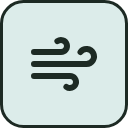

바람숲
잠깐 숲에 들러 숨을 고르는 곳.
호흡, 짧은 명상, 감각 산책과 몸 쉬기를 안내합니다.
어떤 프로젝트인가요?
기분을 고르면 숲 풍경이 바뀌고, 쓴 글은 ‘바람에 흘려보내기’로 바로 지울 수 있습니다. 글과 활동은 어디에도 저장하지 않습니다.
- 숨 고르기·고요히 머물기·지금 여기 산책·몸에 쉼 건네기
- 합성한 바람·비·시냇물 배경 소리
- 활동마다 근거 자료와 출처 연결
숲 열기
의료 서비스가 아니며, 전문가 감수나 임상시험을 거친 앱이 아닙니다. 불편하면 언제든 멈추세요.
바람숲 열기 ↗